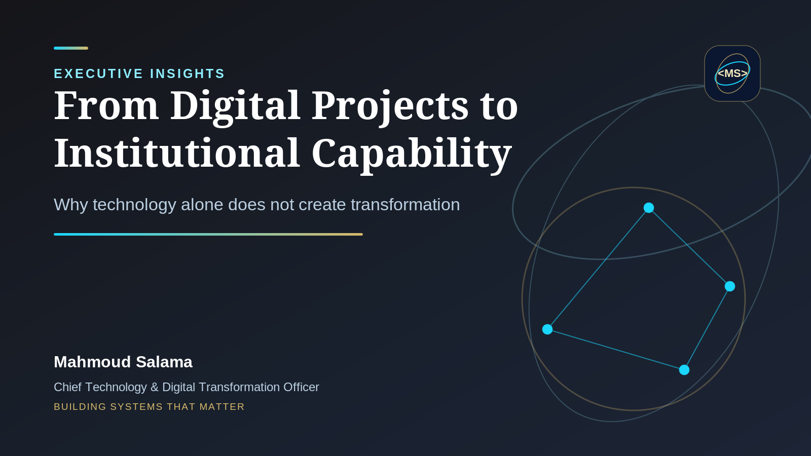

From Digital Projects to Institutional Capability
Why technology alone does not create transformation—and the leadership capabilities required to turn investment into sustainable institutional performance.
Read articleExecutive Insights
General, practical perspectives on governance, enterprise architecture, data, delivery, adoption and measurable transformation value.
Featured article
A focused reading experience with useful actions only: read online, open the PDF, print or share.

Why technology alone does not create transformation—and the leadership capabilities required to turn investment into sustainable institutional performance.
Read article